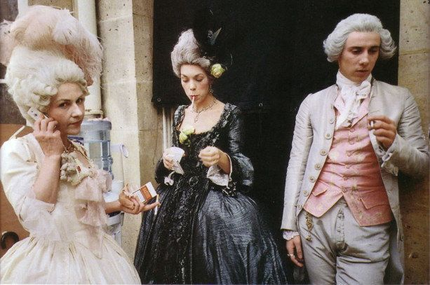
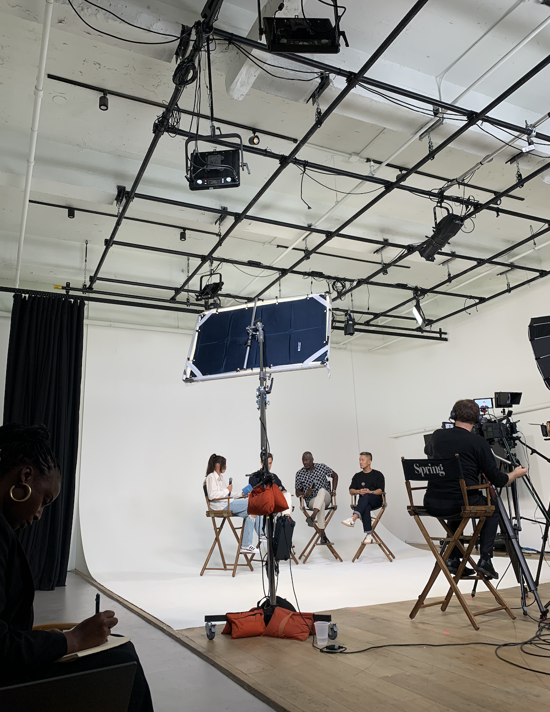

Life & Times Zine !!
Today
Hello,
This week marked Labor Day (the symbolic bookend to summer), the first chilly evenings of Fall, and the end of a second Elizabethan era.
In New York, this week has also marked the start of fashion week(s), and AREA 17 was in the mix. On Wednesday, our Senior Partnerships Strategist Hannah Conway moderated a fascinating panel on fashion and the gaming world, in conversation with guests working to bring digital solutions to the retail industry. We`'`ll circulate the video next week.
This week, we also launched a case study detailing our collaboration with NIKE Inc. Thank you to everyone involved in helping get this out!
Next week, on Tuesday, 9/13, both studios will gather for a Global Assembly, led by Hannah K. For context, courtesy of Hannah K: Global assemblies are regular `'`town hall`'` gatherings. Three times per year (once per Cycle) senior leadership shares the behind-the-scenes of how we`'`re doing as an organization, key updates or areas of focus and OKRs, and creating space for dialogue on anything currently important for the team. Looking forward to seeing everyone at 10:30 ET!
And now a few updates ahead of the weekend!
Celebrations
Birthdays
Anniversaries
Partnerships
New York
This week we received news that we won the branding project with KPMB Architects! Great job team. We continued working on our proposal to UNFCU and are aiming to present our approach to their team next week.
The conversation was picked back up with SXM Media and we’re refining our approach to share with them next week after some changes were made to their RFP. More to come! Conversations are continuing with Pershing Square as we look to create an approach that meets their needs.
We’re waiting on final decision from Gladstone Gallery and Chick-fil-A.
Paris
Made in Design has contacted us to rethink their brand strategy, logo, and visual identity, and then their website in 2023 (in prep for their 25 year anniversary.) For our American friends, Made in Design is similar to Design within Reach. Initially, they contacted us in 2019, but then the project was canceled after they were acquired by Printemps. Now they’re back and ready to roll…